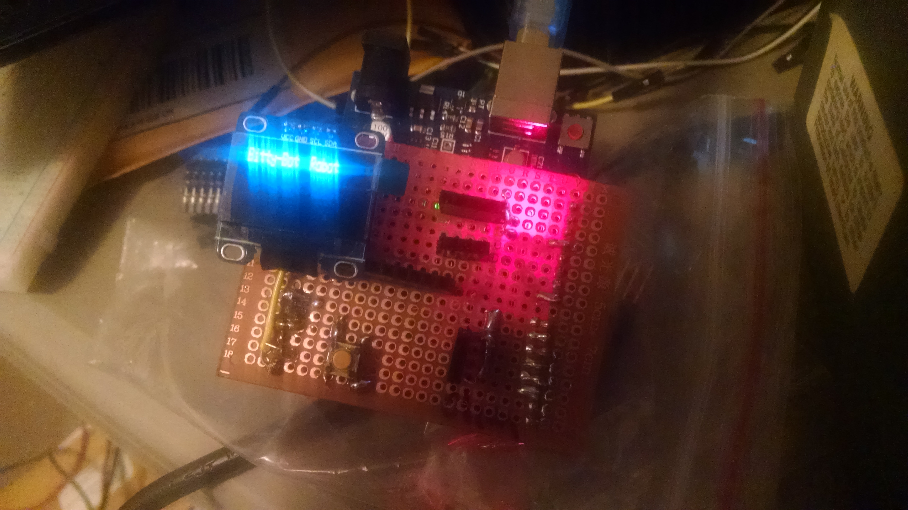
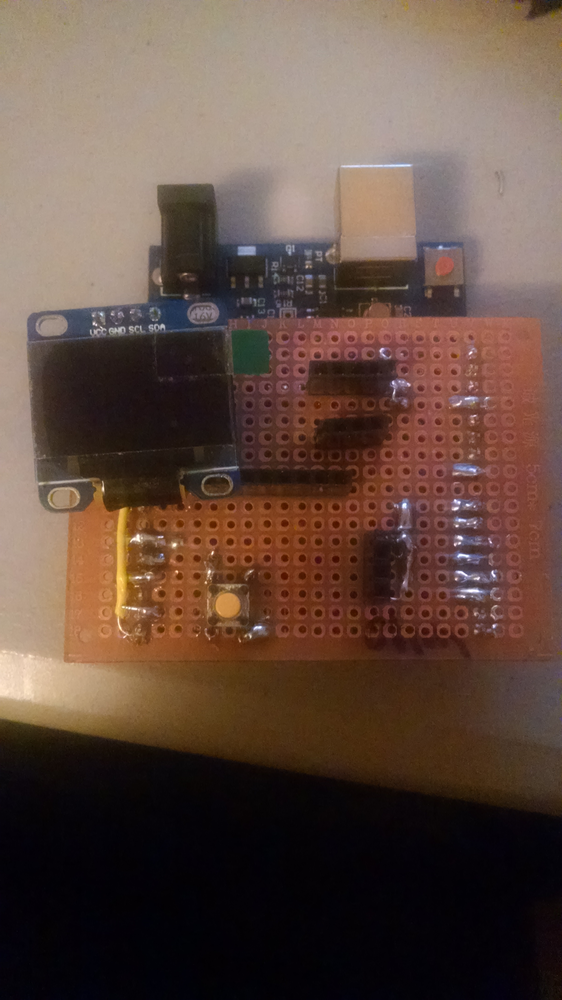

Welcome to Some of my Arduino Projects
This page is to kind of show what can be done with very simple "mark-down" langage.
So here is a picture.... 
I have learned enough about mardown to make some simple sites, with pictures, links, etc. How I learned was from markdown and mkdocs
Commands
These are some common things that you need to know if you use mkdocs. Which makes life easy!
mkdocs new [dir-name]- Create a new project.mkdocs serve- Start the live-reloading docs server.mkdocs build- Build the documentation site.mkdocs help- Print this help message.mkdocs gh-deploy --clean- deploy documents to github.
You can even do a different style of bullets:
1. Different Style of Bullets.
2. Are you Sure? - Yup I think they are.
3. I don't know - Me either.
Project layout
This is some more information about mkdocs and how it's simple to add and layout new files.
mkdocs.yml # The configuration file.
docs/
index.md # The documentation homepage.
... # Other markdown pages, images and other files.
And now for the pictures
And just to prove that pictures are easy to add.....
!


Checkout ebay